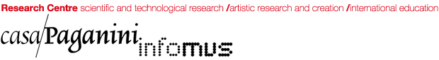

PyEyesWeb#
A research toolkit for the analysis of expressive movement
PyEyesWeb measures how people move: from the kinematics of a joint to the qualities of a gesture and the coordination of a group. It is built on the EyesWeb Expressive Gesture Analysis library of InfoMus Lab – Casa Paganini, University of Genoa.
pip install pyeyesweb
Installation, a first feature, the concepts of the library and how to choose a feature for a question.
The conceptual framework of movement qualities, the notation and the definition of every measure, with references.
Executed tutorials on recorded movement, from the first feature to a real-time loop, each a downloadable notebook.
One page per feature, generated from the code: parameters, inputs, outputs with their units.
Developed by

With the partial support of
PyEyesWeb is developed by InfoMus Lab – Casa Paganini, University of Genoa, as partner of the EU ICT S+T+ARTS project Resilence, funded by the European Union's Horizon programme. If you use it in your research, please cite it.